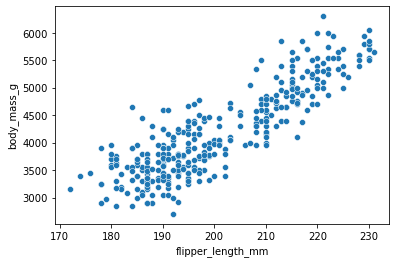
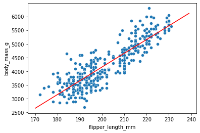
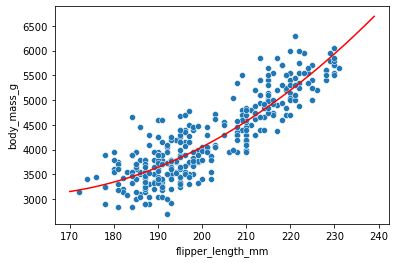
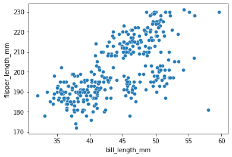
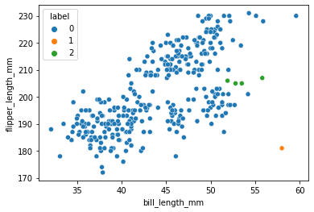
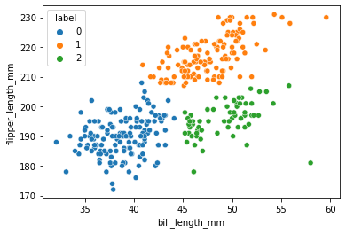

Exercise
Exercise#
In the penguins dataset, do a linear regression between the
flipper_length_mmandbody_mass_gfeatures and plot the result. You might run into an error: carefully read the error and try to fix the problem.
import pandas as pd
penguins = pd.read_csv('https://raw.githubusercontent.com/allisonhorst/palmerpenguins/master/inst/extdata/penguins.csv')
sns.scatterplot(data=penguins, x='flipper_length_mm', y='body_mass_g');

from sklearn import linear_model
model = linear_model.LinearRegression()
X = penguins[['flipper_length_mm']]
y = penguins['body_mass_g']
model.fit(X=X, y=y);
---------------------------------------------------------------------------
ValueError Traceback (most recent call last)
Input In [196], in <module>
2 X = penguins[['flipper_length_mm']]
3 y = penguins['body_mass_g']
----> 4 model.fit(X=X, y=y)
File ~/mambaforge/envs/DAVPy/lib/python3.9/site-packages/sklearn/linear_model/_base.py:662, in LinearRegression.fit(self, X, y, sample_weight)
658 n_jobs_ = self.n_jobs
660 accept_sparse = False if self.positive else ["csr", "csc", "coo"]
--> 662 X, y = self._validate_data(
663 X, y, accept_sparse=accept_sparse, y_numeric=True, multi_output=True
664 )
666 if sample_weight is not None:
667 sample_weight = _check_sample_weight(sample_weight, X, dtype=X.dtype)
File ~/mambaforge/envs/DAVPy/lib/python3.9/site-packages/sklearn/base.py:581, in BaseEstimator._validate_data(self, X, y, reset, validate_separately, **check_params)
579 y = check_array(y, **check_y_params)
580 else:
--> 581 X, y = check_X_y(X, y, **check_params)
582 out = X, y
584 if not no_val_X and check_params.get("ensure_2d", True):
File ~/mambaforge/envs/DAVPy/lib/python3.9/site-packages/sklearn/utils/validation.py:964, in check_X_y(X, y, accept_sparse, accept_large_sparse, dtype, order, copy, force_all_finite, ensure_2d, allow_nd, multi_output, ensure_min_samples, ensure_min_features, y_numeric, estimator)
961 if y is None:
962 raise ValueError("y cannot be None")
--> 964 X = check_array(
965 X,
966 accept_sparse=accept_sparse,
967 accept_large_sparse=accept_large_sparse,
968 dtype=dtype,
969 order=order,
970 copy=copy,
971 force_all_finite=force_all_finite,
972 ensure_2d=ensure_2d,
973 allow_nd=allow_nd,
974 ensure_min_samples=ensure_min_samples,
975 ensure_min_features=ensure_min_features,
976 estimator=estimator,
977 )
979 y = _check_y(y, multi_output=multi_output, y_numeric=y_numeric)
981 check_consistent_length(X, y)
File ~/mambaforge/envs/DAVPy/lib/python3.9/site-packages/sklearn/utils/validation.py:800, in check_array(array, accept_sparse, accept_large_sparse, dtype, order, copy, force_all_finite, ensure_2d, allow_nd, ensure_min_samples, ensure_min_features, estimator)
794 raise ValueError(
795 "Found array with dim %d. %s expected <= 2."
796 % (array.ndim, estimator_name)
797 )
799 if force_all_finite:
--> 800 _assert_all_finite(array, allow_nan=force_all_finite == "allow-nan")
802 if ensure_min_samples > 0:
803 n_samples = _num_samples(array)
File ~/mambaforge/envs/DAVPy/lib/python3.9/site-packages/sklearn/utils/validation.py:114, in _assert_all_finite(X, allow_nan, msg_dtype)
107 if (
108 allow_nan
109 and np.isinf(X).any()
110 or not allow_nan
111 and not np.isfinite(X).all()
112 ):
113 type_err = "infinity" if allow_nan else "NaN, infinity"
--> 114 raise ValueError(
115 msg_err.format(
116 type_err, msg_dtype if msg_dtype is not None else X.dtype
117 )
118 )
119 # for object dtype data, we only check for NaNs (GH-13254)
120 elif X.dtype == np.dtype("object") and not allow_nan:
ValueError: Input contains NaN, infinity or a value too large for dtype('float64').
We need to drop the NA values:
penguins = penguins.dropna()
model = linear_model.LinearRegression()
X = penguins[['flipper_length_mm']]
y = penguins['body_mass_g']
model.fit(X=X, y=y);
X_pred = pd.DataFrame({'flipper_length_mm': np.arange(170,240)})
y_pred = model.predict(X_pred)
sns.scatterplot(data=penguins, x='flipper_length_mm', y='body_mass_g');
sns.lineplot(x=X_pred.flipper_length_mm, y=y_pred, color='r');

Do again a linear regression but this time add a polynomial feature (e.g. 2)
from sklearn.preprocessing import PolynomialFeatures
poly = PolynomialFeatures(degree=2)
X_3 = poly.fit_transform(penguins[['flipper_length_mm']])
model = linear_model.LinearRegression()
y = penguins['body_mass_g']
model.fit(X=X_3, y=y);
X_pred = poly.fit_transform(np.arange(170,240).reshape(-1,1))
y_pred = model.predict(X_pred)
sns.scatterplot(data=penguins, x='flipper_length_mm', y='body_mass_g');
sns.lineplot(x=X_pred[:,1], y=y_pred, color='r');

Subselect the Gentoo species and run a logistic regression to classify penguins as male/female based on the
body_mass_gfeature. Use theliblinearsolver option.
gentoo = penguins[penguins.species == 'Gentoo']
from sklearn import linear_model
model = linear_model.LogisticRegression(solver='liblinear')
model.fit(gentoo[['body_mass_g']]/1, gentoo.sex)
LogisticRegression(solver='liblinear')
plt.plot(gentoo.body_mass_g/1, gentoo.sex, 'o')
plt.plot(np.arange(4000,6000)/1, model.predict(pd.DataFrame({'body_mass_g': np.arange(4000,6000)/1})));

Try to cluster the
flipper_length_mmvsbill_length_mmfeatures usingSpectralClusteringwith 3 clusters. Do the cluster first without then with applying the standard scaler to the input
sns.scatterplot(data=penguins, x='bill_length_mm', y='flipper_length_mm');

from sklearn import cluster, preprocessing
cls = cluster.SpectralClustering(3)
X = penguins[['bill_length_mm', 'flipper_length_mm']]
cls.fit(X=X)
X['label'] = pd.Categorical(cls.labels_)
/var/folders/mk/632_7fgs4v374qc935pvf9v00000gn/T/ipykernel_70861/1652611645.py:3: SettingWithCopyWarning:
A value is trying to be set on a copy of a slice from a DataFrame.
Try using .loc[row_indexer,col_indexer] = value instead
See the caveats in the documentation: https://pandas.pydata.org/pandas-docs/stable/user_guide/indexing.html#returning-a-view-versus-a-copy
X['label'] = pd.Categorical(cls.labels_)
sns.scatterplot(data=X, x='bill_length_mm', y='flipper_length_mm', hue='label');

X = penguins[['bill_length_mm', 'flipper_length_mm']]
scaler = preprocessing.StandardScaler()
X_norm = scaler.fit_transform(X)
cls.fit(X=X_norm)
X['label'] = pd.Categorical(cls.labels_)
/var/folders/mk/632_7fgs4v374qc935pvf9v00000gn/T/ipykernel_70861/858484882.py:7: SettingWithCopyWarning:
A value is trying to be set on a copy of a slice from a DataFrame.
Try using .loc[row_indexer,col_indexer] = value instead
See the caveats in the documentation: https://pandas.pydata.org/pandas-docs/stable/user_guide/indexing.html#returning-a-view-versus-a-copy
X['label'] = pd.Categorical(cls.labels_)
sns.scatterplot(data=X, x='bill_length_mm', y='flipper_length_mm', hue='label');
